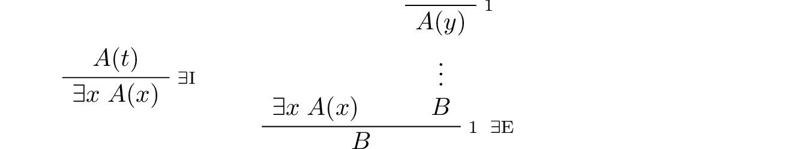

The universal quantifier:
In the introduction rule, \(x\) should not be free in any uncanceled hypothesis. In the elimination rule, \(t\) can be any term that does not clash with any of the bound variables in \(A\).
The existential quantifier:
In the introduction rule, \(t\) can be any term that does not clash with any of the bound variables in \(A\). In the elimination rule, \(y\) should not be free in \(B\) or any uncanceled hypothesis.
Equality:
Strictly speaking, only \(\mathrm{refl}\) and the second substitution rule are necessary. The others can be derived from them.